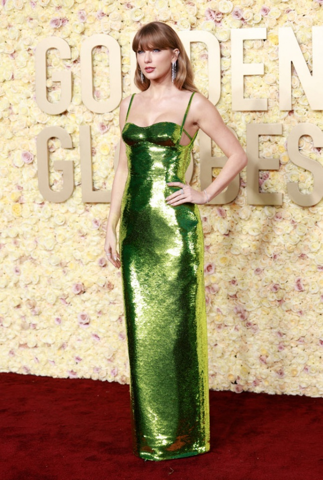
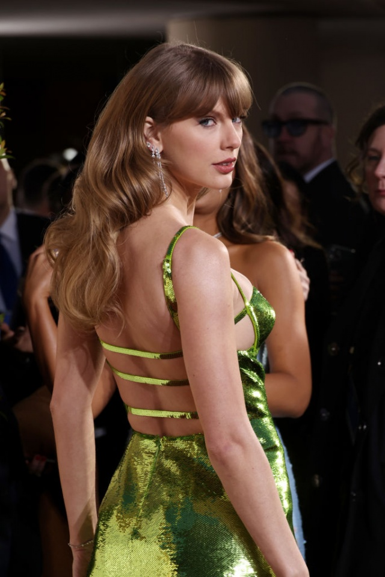
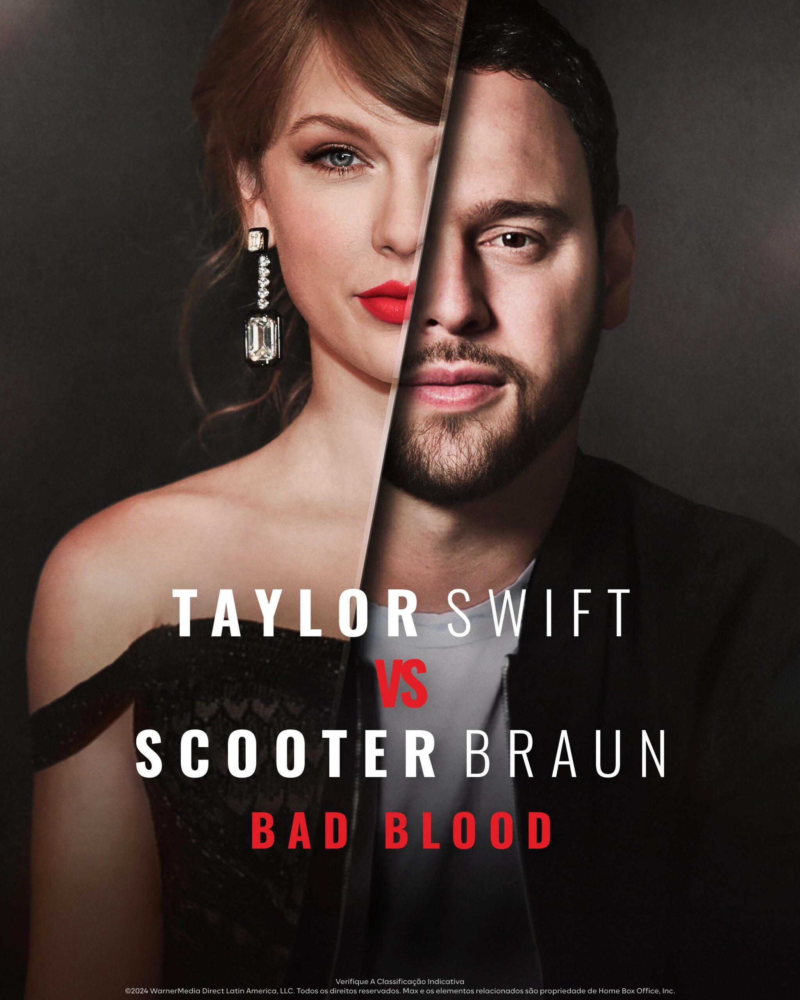

Swift descreveu o conteúdo do álbum como um exercício catártico, permitindo-lhe lidar com a dor emocional de forma criativa. Os críticos consideraram o álbum como um relato pós-término, onde Swift tenta entender a dinâmica da violência emocional e sua vulnerabilidade, resultando em letras que são ao mesmo tempo autocríticas e liberadoras.
Globo de Ouro 2024: Taylor Swift exibe look verde brilhante


Taylor elegeu um vestido inteirinho de paetês verdes, assinado pela grife italiana Gucci, para cruzar o tapete vermelho da premiação e combinou com acessórios de diamantes. A maquiagem clássica, com batom nude cremoso e o clássico delineado gatinho da cantora, completam o look.
Romance com Travis Kelce
Taylor Swift e Travis Kelce foram vistos juntos em um afterparty após a vitória do Kansas City Chiefs. A dupla se divertiu bastante com os colegas de equipe de Kelce, e fontes disseram que "um bom tempo definitivamente foi vivido".
Eras Tour
Taylor está atualmente em pausa de sua tour e se preparando para se apresentar em Miami, onde terá três shows consecutivos de 18 a 20 de outubro. Após essas apresentações, ela também fará shows no Canadá, encerrando a tour em 8 de dezembro de 2024.
Disputa na indústria da música: Taylor Swift Vs Scooter Braun: "Bad Blood" no MAX!

A plataforma de streaming Max lançou sua nova série documental, “Taylor Swift Vs Scooter Braun: Bad Blood“, no último dia 21 de junho. Dividida em dois episódios, a série explora detalhadamente a intensa disputa entre a renomada estrela do pop Taylor Swift e o influente empresário musical Scooter Braun.